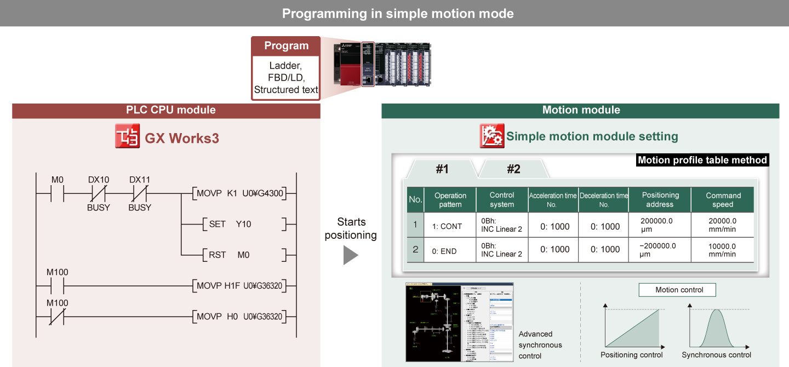
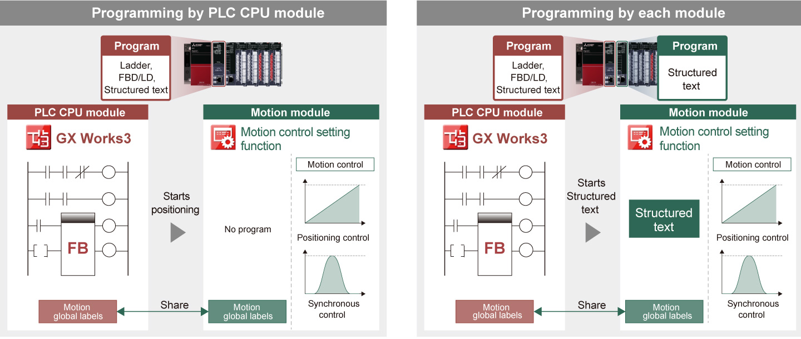
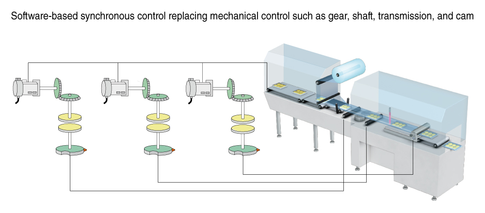
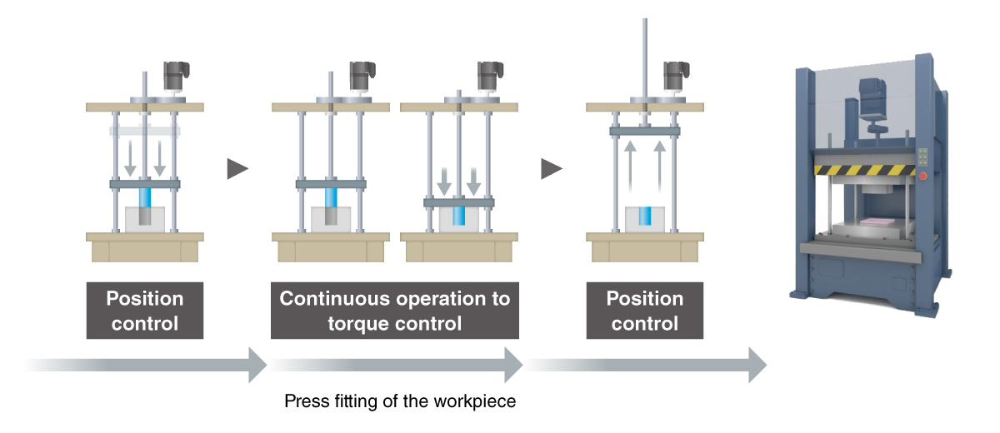
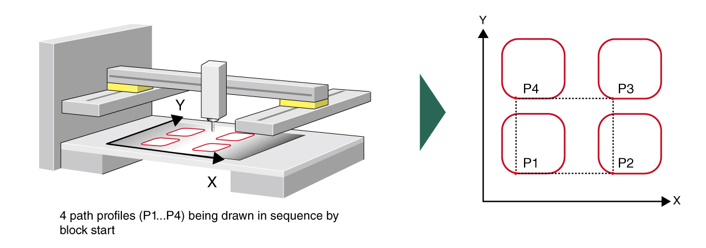
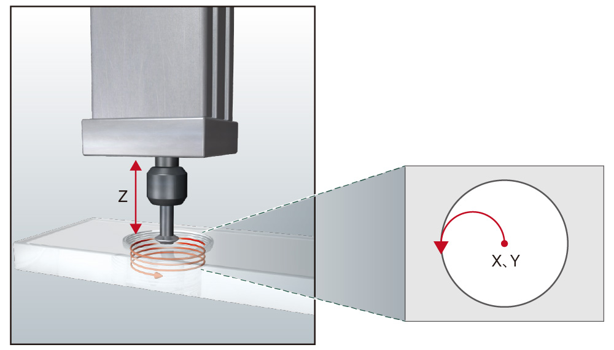

Controllers MELSEC iQ-R Series Product features -Motion, Positioning-

Features
Easy programming utilizing existing assets<sup>Motion</sup>
- Easy programming
- Reducing development time
- The simple motion mode enables the motion module to utilize existing assets for configuring high-performance servo equipment. Reusing existing projects helps to reduce the program development time
- Executes positioning control with the motion profile table and synchronous control with parameter settings
- Remote devices can be connected via CC-Link IE TSN and programmed from the programmable controller CPU module

Motion control with function block (FB)<sup>Motion</sup>
- Reducing programming burden
- Load separation from PLC CPU
- In PLCopen® motion control FB mode, motion control is possible utilizing the library of PLCopen® motion control FBs which are compliant with international standards
- Programming is possible by the programmable controller CPU module only, reducing engineering time
- The motion module performs high-speed and high-accuracy motion control. Operations in ST language is possible, allowing the control load to be separated from the programmable controller CPU module

Software-based synchronous and cam control as
an alternative to mechanical control<sup>MotionSimple motion</sup>
- Compact system
- Easy changeover
- Compact motion system without gears and cams can be configured, eliminating concerns about wear and life
- System performance will improve as mechanical parts causing accuracy errors are no longer used
- Cam replacement when switching a product type can be easily achieved by simply changing cam data

Cycle time reduction by smooth switching<sup>MotionSimple motion</sup>
- No shock to the machine
- Reducing cycle time
- Position control is smoothly switched to torque control (continuous operation to torque control) without stopping the servo motor nor shocking the machine
- The current positions are always tracked even in torque control, and therefore positioning at high speed is possible even after control is switched back to position control, reducing the cycle time

A series of control synchronizing with the workpiece movement<sup>Simple motionPositioning</sup>
- By combining positioning data with starting methods such as multiple axes simultaneous start, quick start, and block start, a series of motion controls synchronizing with the workpiece movement can be performed

Boring processing by the motion system<sup>Simple motionPositioning</sup>
- High-accuracy processing
- The linear interpolation axis (linear control) follows 2-axis circular interpolation control to achieve helical interpolation of a spiral trajectory
- For applications that require the boring of deep and large holes, high-accuracy processing is possible with the motion system using 3-axis helical interpolation control (X, Y, and Z)
